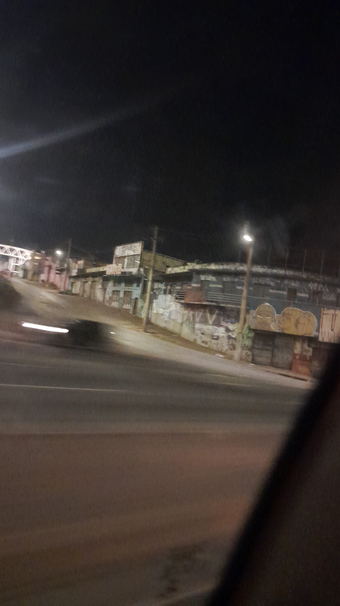

Aula 9: Urbanização: Processo, Hierarquia e Redes
A Transformação e Organização das Cidades no Espaço Geográfico

A urbanização é um dos fenômenos geográficos mais transformadores da história humana, caracterizado pelo crescimento das cidades e pelo aumento da população urbana em relação à rural. Este processo remodela profundamente o espaço, a economia e a sociedade, dando origem a complexas hierarquias e redes urbanas.
O Processo de Urbanização
Urbanização não é apenas o crescimento físico das cidades, mas uma mudança estrutural que envolve:- Concentração Demográfica: Aumento da população em centros urbanos.
- Transformação Espacial: Substituição de paisagens rurais por construções, infraestruturas e ambientes urbanos.
- Mudanças Socioeconômicas: Migração de atividades primárias (agricultura) para secundárias (indústria) e terciárias (serviços), acompanhada pelo desenvolvimento de um estilo de vida e cultura urbanos.
Causas e Impulsionadores:
Os principais motores da urbanização incluem:- Revolução Industrial: Criou demanda por mão de obra nas fábricas urbanas e mecanizou o campo, gerando o êxodo rural.
- Atração por Infraestrutura e Serviços: Cidades oferecem melhores condições de saúde, educação, saneamento, transporte, energia e lazer.
- Industrialização e Investimento: O desenvolvimento industrial pós-Revolução Industrial continuou a concentrar investimentos e empregos nas cidades, acelerando seu crescimento.
- Crescimento Vegetativo Urbano: O aumento natural da população que já reside nas cidades.
- Políticas Governamentais: Incentivos fiscais e planejamento urbano que podem direcionar o crescimento das cidades.
Hierarquia Urbana e Redes Urbanas
As cidades não são entes isolados; elas se interligam e se influenciam, formando um sistema.Hierarquia Urbana (Modelo Clássico):
Refere-se à organização das cidades em diferentes níveis de importância, baseada nos serviços, bens e funções que oferecem. Tradicionalmente, seguia um modelo piramidal de influência:- Metrópoles Globais: Cidades de altíssima influência mundial (ex: São Paulo).
- Metrópoles Nacionais: Grandes cidades com influência em nível nacional (ex: Rio de Janeiro).
- Capitais Regionais: Cidades que polarizam e fornecem serviços para uma região específica.
- Centros Sub-Regionais e Cidades Locais: Centros menores, com serviços mais básicos, dependentes dos centros superiores.
Redes Urbanas (Abordagem Contemporânea):
Com o avanço dos transportes e das telecomunicações, as relações entre cidades se tornaram mais flexíveis e horizontais, formando as Redes Urbanas. Uma rede urbana é o conjunto de cidades (os "nós") interligadas por intensos fluxos de pessoas, mercadorias, informações e capitais (os "elos").- Flexibilidade: Cidades em diferentes níveis hierárquicos podem se conectar diretamente.
- Fluxos Intensos: Movimento rápido de informações e capitais impulsionado pela tecnologia.
- Especialização: Cidades podem se especializar em certas funções (tecnologia, logística, turismo), complementando a rede.